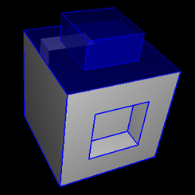
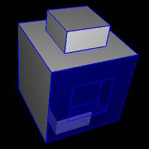
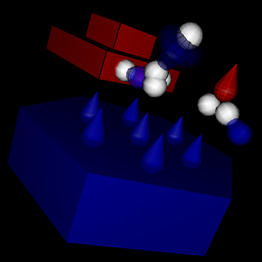
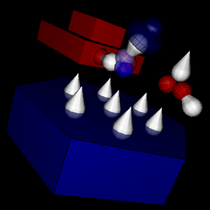

While creating a kosima project you build a structure of basic building
blocks, similar to playing with LEGO. In kodisein the individual 'LEGO
pieces' are called modules.
There are different sets of modules available:
You may connect one module to another, if they have matching...
The interfaces between modules. We distinguish several types of connections:
- Matrix connections
- Value connections
- Attribute connections
- Texture Set connections
- Particle connections
The connections are directional: there exist two connectors for each
connection type, one in connector and one out connector.


The images above depict a module with it's matrix out and matrix
in connector highlighted (blue).


Some modules with their value in connectors (left) and value
out connectors (right) highlighted in white.
A module may have multiple connectors. For example, the camera module
has 7 matrix out connectors, 1 matrix in connector and
7 value in connectors:

You may connect two modules in different ways:
- Select the in connector of module A and the out
connector of module B. Then activate the menu item edit
> module > connect (or press it's shortcut
key 'c').
- Select a module with a free out connector. If you create
a new module with an corresponding in connector afterwards,
kodisein will automatically connect the new module with the selected
module.
You may disconnect two connected modules by selecting a connector
and activating the menu item edit > module > disconnect
(or press it's shortcut key 'd').
>>> Modulators, Triggers &
Values